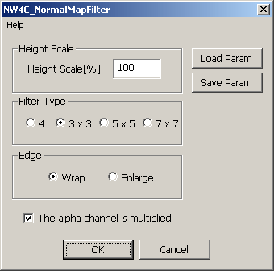

This plug-in treats differences in luminosity in the image as differences in height, and creates a normal map from those bumps. Color images can also be processed.
Select all channels, and then select Filter > NintendoWare for CTR > NW4C_NormalMapFilter. A dialog box appears.

Use Height Scale to set a scale value to adjust the height of the bumps. This value is a percentage. A higher value emphasizes the bumps more.
Use Filter Type to set the filter type. The larger the value, the greater the range sampled. The default is 3 x 3.
Use Edge to set how to process the edge of the image. Select Wrap to wrap the edge. Select Enlarge to enlarge the pixels at the edge. The default is Wrap.
Use The alpha channel is multiplied to select whether to multiply the alpha channel by the height map.
Select the check box to multiply the alpha channel by the height map. Clear the check box to not multiply the alpha channel by the height map. No multiplication is performed if there is no alpha channel even if this check box is selected.
Click Load Param to open a dialog box to select a settings file to load and apply as the current parameters.
Click Save Param to open a dialog box to save the current parameters to a settings file.
The plug-in only runs if the image mode is RGB Color.
You cannot run the plug-in on files that use 16 bits per channel.
If there are two or more alpha channels, the height map is multiplied only by the information for the alpha channel at the top of the list in the Channel window.
Select the RGB channel and run.
The plug-in will not process correctly if only the alpha channel selected.
The plug-in runs on the selected layers.
The process can also be applied to mipmap images.
CONFIDENTIAL